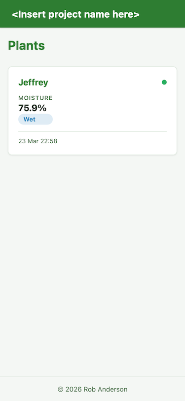
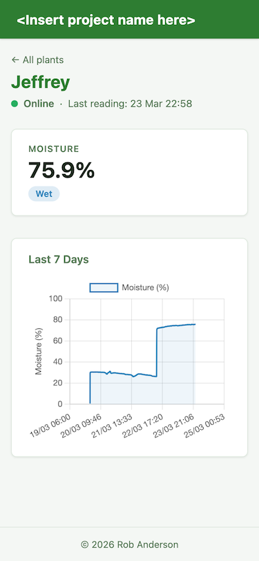

Trying Claude with a hobby project
2026-03-23Preface
I used an LLM for the majority of the code in this project, but everything written here was written by me with my keyboard. I'd like my writing to be better, but that's why I do more of it.
I've been an AI skeptic for as long as it's regularly been in the news. I'd tried out a few small LLMs locally, but with my RX 9060XT I'm limited to models that fit into 16GB of VRAM.
While seeing my GPU churn out text and even simple code pretty quickly was cool, it never felt like more than a shortcut to get a Wikipedia-esque response to a question, or to spit out some simple code.
I've tried and failed to get LLMs to one-shot some more complex problems, so had pretty much written off the idea that it'd ever do more than answer simple questions about code without the sass of a seasoned StackOverflow commenter.
I've worked on teams with developers who used ChatGPT to produce code they didn't understand, and had been frustrated when they were unable to answer my questions in the code review.
Despite all this I was aware that it feels like the software industry is changing; like we're heading towards quick Nordic flat-pack furniture rather than the bespoke hand made hardwood furniture that at one time was standard.
Enter Claude
I didn't do much research before settling on Claude. I'd tried the free versions of a few LLM providers, and felt Claude's dev focus suited my use case reasonably well. My initial usage involved it helping me get Neovim setup on my laptop so I could get proper linting and syntax highlighting in the various languages I use.
My wife was away with her family at the time, and I had been tasked with keeping a couple of houseplants alive. This involved the complex task of watering them if the top few cm of soil was dry, and sending some pictures of her orchid as it had picked that exact week to start flowering.
I decided that the next obvious step was to run a service on my home server to keep track of the moisture level of the soil in the pots, using a couple of Raspberry Pi Picos I had lying around. I bought a pack of cheap moisture sensors from Amazon and started thinking about how I'd build the service that'd run on my Server.
It seemed like a good fit for an LLM, as it'd be a small service with limited functionality and it needed building from the ground up.
I installed the Claude Desktop application, and asked it to produce a plan for my new service.
# me
You are a senior project owner.
I'm creating a project to monitor and display the moisture content of all of the plants in my house. The MVP test subject is my wife's orchid that she's called Jeffrey.
I've created `Bloom.slnx` which is a .Net 10 solution file. Using C# I'm going to created a monolithic project that will connect to an SQLite database. Any frontend work will be done with Razor pages, using vanilla HTML and CSS. Any interactivity will be done with Typescript, which will be compiled using `Microsoft.TypeScript.MSBuild`.
The data from the IoT sensor attached to the plant pot will come via MQTT, so I want to use MQTTnet to receive regular measurements on the endpoint `/mqtt`. I want to have a REST API available at `/api`, and a Razor pages site with the root `/web`.
Create a project plan with logical bite-sized steps to finish this project. Ask questions about anything needing clarification, including the tech stack, business logic, and anything else you can think to ask.
Store the project plan in `plan.md`
I decided to use Opus 4.6 for the initial planning, though I'm not sure what difference that would have made. It's response was reasonably sensible either way, though I had to ask it to use MQTT 5 rather than MQTT over websockets, which was its initial choice.
# claude
Plan written to `plan.md`. Here's a summary of the 6 phases:
1. **Project Scaffolding** - Create the ASP.NET project, add NuGet packages, configure the three route prefixes (`/mqtt`, `/api`, `/web`), and set up TypeScript compilation
2. **Database & Data Model** - EF Core with SQLite, `Plant` and `SensorReading` entities, migrations, seed Jeffrey
3. **MQTT Broker & Ingestion** - Built-in MQTTnet broker on `/mqtt` via WebSocket, subscribe to `plants/+`, parse JSON payloads, persist readings
4. **REST API** - Read-only endpoints at `/api` for listing plants, fetching historical readings (default 7 days), and plant details
5. **Frontend Dashboard** - Razor Pages at `/web` showing Jeffrey's current state, a Chart.js time-series chart, and a dry/moist/wet visual indicator
6. **Polish & Testing** - Data retention cleanup, error handling, integration tests, and a mock MQTT publisher for local dev
Each phase builds on the previous one, so they can be tackled sequentially. The steps within each phase are small enough to implement one at a time. Want to adjust anything before we start building?
# me
Please change the `plan.md` to use MQTT 5 for the MQTT broker instead of MQTT over websockets
# claude
Updated. The plan now uses MQTT 5 over TCP (port 1883) instead of MQTT over WebSocket. Key changes:
- Broker listens on TCP port 1883 (native MQTT 5) instead of a `/mqtt` WebSocket endpoint
- Dropped `MQTTnet.AspNetCore` from dependencies (not needed for TCP-only broker)
- Removed `/mqtt` from the routing setup since it's no longer an HTTP path
I'm not sure why I said "please", but I guess it's always better to be polite?
After the initial planning I switched back to Sonnet 4.6 (as recommended by blog posts I'd read), and each of the tasks was compeleted with a prompt roughly the same as:
# me
You are an experienced senior C# software developer. You prioritise simple, readable code and prefer to use the .Net standard library over external dependencies where possible.
Please read `plan.md` for information on what you're building, and `development.md` as a history of the development work and decisions that have been done so far.
Implement Phase 5 of the plan, asking questions where necessary if one of the requirements isn't clear enough. Update `plan.md` as each subtask is completed, and write a short summary of work done to `development.md`.
I don't know how important logging decisions to development.md was, if nothing else it was useful for me to keep track of the changes and decisions.
Claude had an issue with Microsoft's MQTTNet library initially, trying to create an F# script to spit out reflected types and method signatures from the dll. It was saving the .fsx scripts to my /tmp directory, but then failing to run them; I'm still not sure why. Eventually it gave up and just downloaded the source from the MQTTNet Github repo, but hit a number of rate limiting errors along the way.
It seems resourceful to try reflection and the Github repo, but I'm surprised the library isn't part of some sort of training data for the model already.
I also had to ask Claude to pull out the default dependencies Bootstrap and JQuery as I wouldn't class them as "vanilla" JS and CSS.
Completed backend service
What was produced was simple and functional. I don't know if I could have finished the same backend service in just one evening myself, so I was definitely impressed with that.
I'd tried to stress that it was a service that only my wife and I would be using to stop Claude from enterprise-ing it up, and that seemed to work pretty well. A .Net monolith with SQLite might not scale to hundreds of thousands of concurrent users, but it doesn't need to.
But can it IoT?
Next I had Claude turn to the code that'd run each of the Pico W's that would be attached to the moisture sensors. I've played around with running Micropython on Picos before, so decided that would be the easiest way to get something working.
Claude handled my initial prompt well, though as the moisture sensors hadn't arrived yet I had asked it to return a randomly generated moisture percentage for the time being.
# me
You are an experience micropython programmer writing a hobbyist IoT program for a Raspberrry Pi Pico W.
Implement `main.py` to connect to my Wifi network, using placeholder variables `wifi_ssid` and `wifi_password`. Set the network hostname to `jeffrey`
Connect to an MQTT server at `ip_address` on port `1883` using the MQTT implementation in `mqtt/simple.py`.
Read the temperature of the Pi Pico W on ADC 4, with the assumption that at 27 celsius the voltage will be close to 0.706V, and every degree of temperature change will change the voltage by around 1.721mV. A higher voltage will be a higher temperature.
Generate a *random* moisture level between 0 and 100, following some slow sine wave with a frequency around 0.01Hz.
Take 5 readings of each value a second apart to find the median of each.
Format the median `temperature` and `moisture` as json and send publish it to `plants/<hostname>`
Send a new measurement every 600 seonds.
Provide a written log of everything done in `dev.md`, and add instructions on how to deploy the code to my Pico W in `README.md`.
Ask questions to ensure that your understanding is correct.
Claude asked a load of questions, which essentially boiled down to "Keep it simple".
It gave me the instructions required to copy the pythong files across to my Pico using mpremote, and I was off to the races.
Once the moisture sensors arrived I had claude write a new test script that read the voltage from the moisture sensor on ADC0 (GPIO 26) and print them out so I could work out the reading at 0% moisture (sensor held in the air), and 100% moisture (sensor dunked in a glass of water).
From there I asked Claude to update the original main.py program to use these new voltages (2.738V dry and 1.040V wet), which it also did with ease. I was pleased to see that it pulled out the math import which had previously been required for the sine wave.
Minor refactor
I discovered pretty quickly that the temperature from the Pico W was actually the temperature of the RP2040 chip, and not of the air temperature so decided to remove it from the Python code and from the backend service until I get round to buying a proper external temperature probe.
Removing the temperature from the Pico's Python code was very quick and simple, but removing it from the backend service and from EF Core took significantly longer. This is one of the few situations where I think I could have completed the task faster than Claude, as the query took around 10 minutes in total.
More testing is required before I make any sweeping assumptions, but it was odd to see a refactor taking longer than the initial implementation.
Conclusion
I was more impressed than I thought I'd be with Claude. It exceeded my expectations building a project from scratch, and I'll continue to trial it at £20 per month. I've not run up against any usage limits yet, but I still feel like I'm dipping my toes into the water at the moment.
Jeffrey after being watered once my wife got home:

